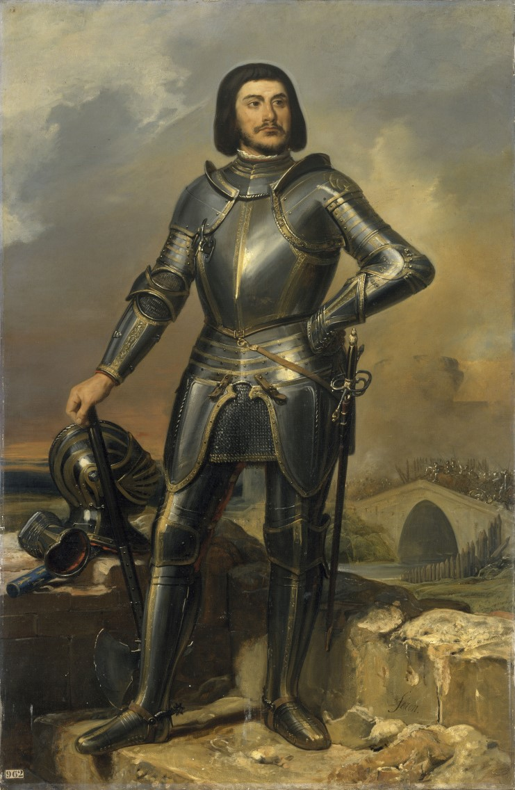

BLUEBEARD'S LEDGER
Joan heard the voices of saints; Gilles heard nothing — and filled the silence himself.

BLUEBEARD'S LEDGER
Joan heard the voices of saints; Gilles heard nothing — and filled the silence himself.
Feature map
Level-by-level features, as the figure refined them.
The Ledger
passive
Tier IV · Striker (Harvest) · Suggested CE ability: CHA · Primary verb: Confess. Your technique save DC = 8 + your proficiency bonus + your CHA modifier.
Gilles tracks Sin charges — the book never closes. Maximum charges: 10 + (PB × 2). He gains 1 charge when: - any creature dies within 60 ft of him; - he witnesses an act of cruelty (GM's call — roughly once per scene, not per blow); - a creature fails a save against his fear aura. Charges persist until spent. Track them openly — everyone at the table should see the number climb. Dread is a mechanic.
Debtor's Blade
action
Melee attack with the Marshal's blade: +PB + STR (or DEX) to hit, 1d8 + modifier slashing. Before the attack roll, he may spend up to 3 Sin charges: +1d8 necrotic damage per charge — the dead lend their weight to the blow. The blade leaves ink-black wounds that do not bleed so much as write.
Aura of the Accused
passive, 30 ft
The courtroom follows him. Enemies starting their turn in the aura must succeed on a WIS save vs technique DC or be frightened for 1 minute (re-save at the end of each of their turns). Confession rider: while frightened by this aura, a creature cannot deliberately lie — and if questioned, must answer truthfully, as zone of truth (no additional save). The Ledger writes down everything.
Spend the Page
bonus action, variable charges
He reads a page aloud. One creature within 60 ft that can hear him: spend any number of charges, deal 1d10 psychic damage per 2 charges spent (round down). WIS save vs technique DC for half. The victim hears their own accusations in his voice.
Compound Interest
passive
The Ledger rewards cruelty with interest: when a creature dies while frightened by his aura, Gilles gains 2 Sin charges instead of 1. Fear is the seed; death is the harvest. ("Frightened" here means the aura, the Speech's aftermath, or magical fear he caused. Incidental fear doesn't compound.)
The Trial at Nantes
action, 5 CE
Single-target prosecution. One creature within 60 ft: WIS save vs technique DC or be accused for 1 minute — attacks against it have advantage, it has disadvantage on saves against Gilles's effects, and it takes 2d8 psychic damage at the start of each of its turns (the courtroom, in its head, never recesses).
Hanged, Then Burned
reaction, 4 CE
When Gilles takes damage, the Ledger pays it forward: the attacker takes half the damage as necrotic — WIS save vs technique DC for half of that. He has been hanged before. He knows how to share it.
Mass Confession
action, 8 CE
All creatures within 60 ft: WIS save vs technique DC or be frightened for 1 minute and subject to the confession rider — and Gilles learns one secret from each creature that fails (the GM decides the secret — it should be the one they'd least want him to know). Re-save vs the fright at the end of each turn; the secrets are already written.
Close the Books
action, 10 CE
The Maximum. Gilles spends ALL accumulated Sin charges at once. One creature within 120 ft: WIS save vs technique DC or take 1d12 necrotic per charge spent (save for half) — and, whether it saves or not, it is written in: for the next year (or until remove curse cast with a 9th-level slot), Gilles always knows its location and direction, and it has disadvantage on saves against his fear effects. The book never forgets. It only ever closes.
Maximum, Domain, or equivalent.
Capstone material.
"THE COURTROOM AT NANTES" (disclosed rule-domain)
The courtroom as it was in 1440 — high windows, the ecclesiastical bench, the smell of iron-gall ink and old smoke. The sure-hit is procedure: every hostile within is the accused — - they cannot speak except to answer questions put to them (the rule of the court; deliberate speech beyond answers deals 3d8 psychic as Heaven marks the contempt); - deliberate lies spoken within deal 3d8 psychic to the liar as Heaven marks the falsehood; - his fear aura extends to the entire domain (no 30-ft limit while it stands).
- Clash points
- 800
- Burnout
- 5 rounds
- Duration
- 2 minutes
- Radius
- 60-ft enclosed radius
- Activation ✦
- full-turn action
- CE cost ✦
- 20
✦ Canon: figure Domains are Specific Domains — the stated profile governs, not the player point-unlock table.
The Erased Page (capstone)
Once — ever, not per rest — as an action, Gilles may erase one page: end any single magical effect, condition, geas, curse, or binding vow affecting him. No save. No counter. No dispel check. Heaven itself honors the erasure, because the Ledger's arithmetic is older than most of the magic in the world. He has been saving it for six hundred years. He is saving it for one page: Sun's leash-vow. The General knows. The General keeps him close anyway — because a knife you can see is a knife you can plan around, and because the day Gilles spends the erasure is the day the General finally learns what the Marshal truly wants. The GM decides when — if ever — he spends it. It should be the hinge of an arc, not a combat trick.
Build-defining options.
Historical-figure techniques grant no feats — the figure's art is complete as written, and the builder's feat picker excludes these techniques. Take the progression as the build.
Edge cases and shared systems.
Campaign canon notes